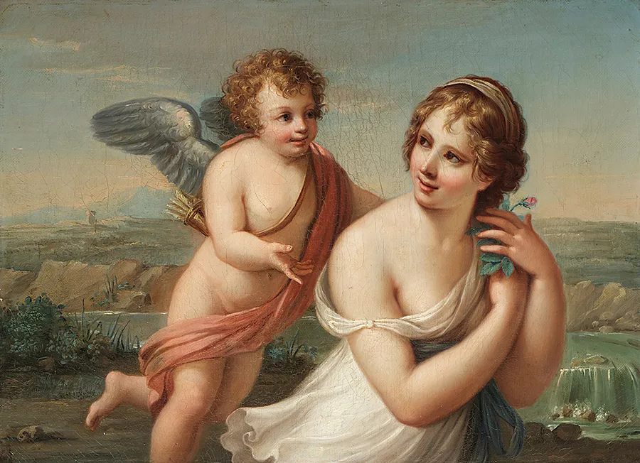
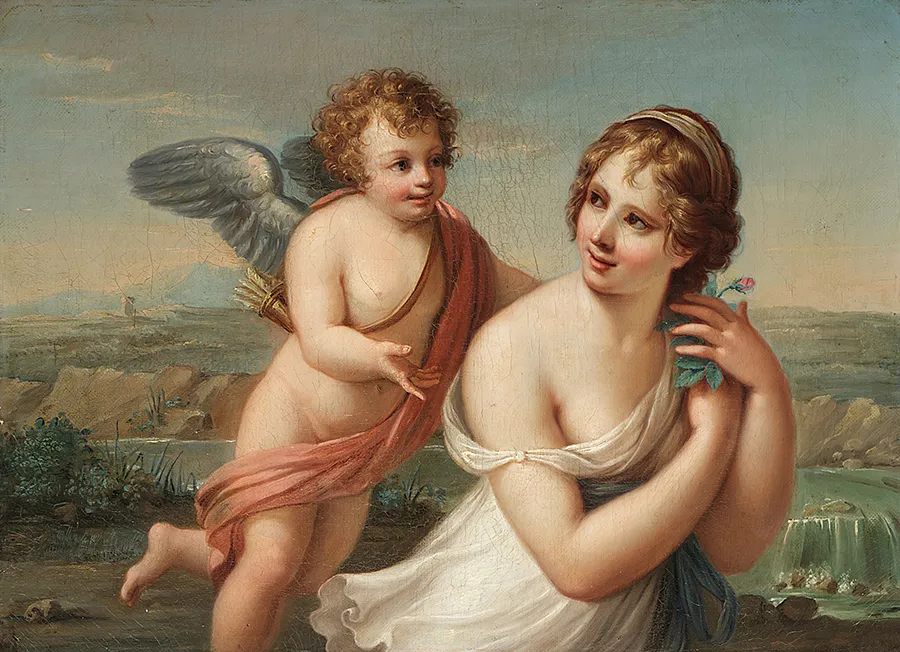

Where beauty transcends
Our gallery is a place to learn, to be inspired, and to simply relax and enjoy the beauty of art. We offer a variety of programs and events, so there is always something new to see and do.
Learn more Exhibitions 

Video guide
Embrace the artistic journey with our video guides.


—1704
Timeless Artistry
Learn about the historical context, artistic techniques, and cultural significance.
 TOP PAINTERS
BEST PAINTINGS
TOP PAINTERS
BEST PAINTINGS